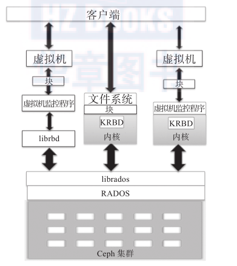
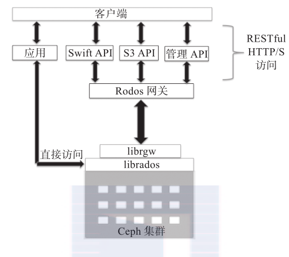
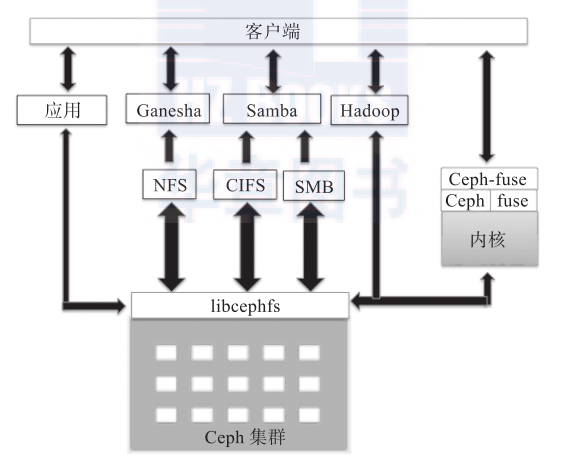

Ceph RADOS
RADOS是Ceph存储系统的核心，也称为Ceph存储集群。Ceph的所有优秀特性都是由RADOS提供的，包括分布式对象存储、高可用性、高可靠性、没有单点故障、自我修复以及自我管理等。因此，RADOS层在Ceph存储架构中扮演着举足轻重的角色。Ceph的数据访问方法（如RBD、CephFS、RADOSGW和librados）的所有操作都是在RADOS层之上构建的。
当Ceph集群接收到来自客户端的写请求时，CRUSH算法首先计算出存储位置，以此决定应该将数据写入什么地方。然后这些信息传递到RADOS层进行进一步处理。基于CRUSH规则集，RADOS以小对象的形式将数据分发到集群内的所有节点。最后，将这些对象存储在OSD中。
当配置的复制数大于1时，RADOS负责数据的可靠性。同时，它复制对象，创建副本，并将它们存储在不同的故障区域中，换言之，同一个对象的副本不会存放在同一个故障区域中。然而，如果有更多个性化需求和更高的可靠性，就需要根据实际需求和基础架构来优化CRUSH规则集。RADOS能够保证在一个RADOS集群中的对象副本总是不少于一个，只要你有足够的设备。
除了跨集群存储和复制对象之外，RADOS也确保对象状态的一致性。在对象不一致的情况下，将会利用剩下的副本执行恢复操作。这个操作自动执行，对于用户而言是透明的，从而为Ceph提供了自我管理和自我修复的能力。如果仔细分析Ceph的架构图，你会发现它有两部分：RADOS在最下部，它完全处于Ceph集群的内部，没有提供给客户端直接接口；另一部分就是在RADOS之上的面向所有客户端的接口。
RADOS以对象的形式将数据存储在池中。使用下面的命令查看RADOS池：1
[root@host /]
使用下面的命令查看池中的对象：1
rados df
RADOS包含两个核心组件：OSD和monitor。下面将详细讲解这些组件。
## Ceph对象存储设备
Ceph的OSD是Ceph存储集群中最重要的一个基础组件，它负责将实际的数据以对象的形式存储在每一个集群节点的物理磁盘驱动器中。Ceph集群中的大部分工作是由OSD守护进程完成的。存储用户数据是真正最耗时的部分。接下来将讨论Ceph中OSD守护进程的任务和职责。
Ceph OSD以对象的形式存储所有客户端数据，并在客户端发起数据请求时提供相同的数据。Ceph集群包含多个OSD。对于任何读或写操作，客户端首先向monitor请求集群的map，然后，它们就可以无须monitor的干预直接与OSD进行I/O操作。也正是因为产生数据的客户端能够直接写入存储数据的OSD而没有任何额外的数据处理层，才使得数据事务处理速度如此之快。与其他存储解决方案相比，这种类型的数据存储和取回机制是Ceph所独有的。
Ceph的核心特性（比如可靠性、自平衡、自恢复和一致性）都始于OSD。根据配置的副本数，Ceph通过跨集群节点复制每个对象多次来提供可靠性，同时使其具有高可用性和容错性。OSD上的每个对象都有一个主副本和几个辅副本，辅副本分散在其他OSD上。由于Ceph是一个分布式系统并且对象分布在多个OSD上，因此每一个OSD对于一些对象而言是主副本，但同时对于其他对象而言就是辅副本。存放辅副本的OSD受主副本OSD控制；然而，它们也可能又成为主副本OSD。从Ceph的Firefly版本（0.80）发布以来，添加了一个称为纠删码的新的数据保护机制。
在磁盘发生故障的时候，Ceph的OSD守护进程会自动与其他OSD通信，从而开始执行恢复操作。在这期间，存放故障磁盘对象的辅OSD会被提升为主OSD，同时，在恢复期间会为对象生成新的辅副本，整个过程对于用户是完全透明的。这保证了Ceph集群的可靠性和一致性。一个典型的Ceph集群部署方案会为集群节点上的每个物理磁盘创建一个OSD守护进程，这是推荐的做法。然而，OSD也支持以更灵活的方式部署OSD守护进程，比如每个磁盘、每个主机或者每个RAID卷一个OSD守护进程。JBOD环境下的多数Ceph集群部署会为每一个物理磁盘部署一个OSD守护进程
Ceph OSD的文件系统
Ceph的OSD由一个已经存在Linux文件系统的物理磁盘驱动器和OSD服务组成。Linux文件系统对于OSD守护进程而言是相当重要的，因为它决定了支持哪些扩展属性（XATTR）。这些文件系统扩展属性能够为OSD守护进程提供内部对象的状态、快照、元数据和ACL等信息，这有助于数据管理。OSD在拥有有效Linux分区的物理磁盘驱动器上进行操作。Linux分区可以是Btrfs（B树文件系统）、XFS或ext4。Ceph集群的性能基准测试的主要标准之一就是文件系统的选择。相对于Ceph，以下几种文件系统在很多方面都是不同的。
Btrfs：与使用XFS和ext4文件系统的OSD相比，使用Btrfs文件系统的OSD能够提供更佳的性能。使用Btrfs最主要的一个优点是支持写时复制和可写的快照，这对于虚拟机的部署和克隆非常有用。在文件系统中它还支持透明的压缩、普遍的校验和和多设备的统一管理。Btrfs还支持高效的XATTR、对于小文件的合并，还有SSD上所熟知的集成卷管理，并支持在线fsck的特性。然而，尽管有如此多的新特性，Btrfs目前还不具备应用于生产系统的条件，但对于测试而言它是一个很好的选择。
XFS：这是一个可靠、成熟且非常稳定的文件系统，因此，我们推荐在生产环境的Ceph集群中使用它。Btrfs还不太适合生产环境。XFS是Ceph存储中最常用的文件系统，也是推荐OSD使用的文件系统。然而，从另一个方面来看，XFS又不如Btrfs。XFS在元数据扩展性上存在性能问题。XFS也是一种日志文件系统，也就是说，每次客户端发送数据以写入Ceph集群时，首先需要写入日志空间，然后再写入XFS文件系统。这样的两次写入操作增加了开销，从而使得XFS的性能不如Btrfs，Btrfs没有使用日志。
ext4：ext4文件系统也是一种日志文件系统，是一个适合生产环境下Ceph OSD使用的文件系统；然而，它的受欢迎程度不如XFS。从性能的角度来看，ext4文件系统也不如Btrfs。
Ceph OSD充分利用底层文件系统的扩展属性来扩展其内部对象状态和元数据的形式。XATTR允许通过xattr_name和xattr_value来存储对象的额外信息，从而为提供更多的元数据信息来标记对象提供了一种方法。ext4文件系统因为限制了XTTRA的存储容量使得其不具备提供足够的XATTR信息的能力，这也使得它并不是一个很流行的选择。另一方面，Btrfs和XFS文件系统在XATTR存储容量上的限额就比较大。
- Ceph OSD日志
Ceph OSD使用诸如Btrfs和XFS的日志文件系统。在将数据提交到备用存储之前，Ceph首先将数据写入一个称为日志（journal）的独立存储区域，日志是相同的机械磁盘（如OSD）或不同的SSD磁盘或分区上一小块缓冲区大小的分区，甚至也可以是文件系统上的一个文件。在这种机制中，Ceph的所有写都是先到日志，然后再到备用存储，如下图所示。
默认情况下，每隔5秒日志会向备用存储刷新数据。常见的日志大小是10GB，但分区越大越好。Ceph使用日志来保障速度和一致性。日志允许Ceph OSD快速处理小文件写，随机写都是首先使用顺序模式写入日志中，然后再写入后端文件系统。这为文件系统提供了充足的时间把写操作合并到磁盘中。当日志创建在SSD磁盘分区上时有一个相对更高的性能已经被证实。在这种情况下，所有客户端的写操作都是写入高速的SSD型日志中，然后再写入机械磁盘中。
使用SSD作为OSD的日志能够很好地处理工作负载的峰值。然而，如果日志的速度低于备用存储的速度，这对你的集群性能而言将会是一个限制因素。按照建议，在使用额外的SSD来做日志的时候，每个SSD磁盘最多给4或者5个OSD做日志。一旦超过这个数目的OSD的日志盘在同一个SSD磁盘上，这将是集群的性能瓶颈。同样，如果采用XFS或者ext4文件系统的多个OSD日志在同一个磁盘上，一旦这个盘出现错误，你将失去你的OSD及其数据。
这就是Btrfs的优势：如果发生日志错误的OSD盘使用的是Btrfs-based文件系统，它将能够回滚到过去，这样只会导致最小的数据丢失或没有数据丢失。Btrfs是一个写时复制文件系统，也就是说，如果一个块的内容发生了变化，而针对这个块的写是独立进行的，因此能够保留旧的块。对于这样一个场景下的损坏，数据依然可用，因为旧的内容依然可用。想了解Btrfs的更多信息，请访问https://btrfs.wiki.kernel.org。
到目前为止，我们讨论了使用物理磁盘驱动器来作为Ceph OSD。然而，Ceph集群部署也支持使用RAID来作为OSD。不推荐在Ceph集群中使用RAID有若干原因，如下所示。
使用RAID并在此之上做副本是相当痛苦的。默认情况下，Ceph为了保护数据会在内部执行复制；而对副本数据再做RAID没有任何好处。它最终将添加一个额外数据保护层并增加复杂性。在RAID组中，如果你失去了一个磁盘，恢复操作需要另一个相同类型的空闲磁盘才能开始执行。接下来，我们必须等待整个磁盘中的数据全部写入一个新的磁盘。恢复一个RAID卷会花费大量的时间，同时与分布式复制的方法相比性能会低。所以，你不应该使用RAID来做复制。然而，如果你的系统有一个RAID控制器，你应该为每个磁盘驱动器配置RAID 0。
Ceph依赖复制（而不是RAID）来实现数据保护。这样做的好处是：在存储系统发生磁盘故障的时候，进行恢复操作不需要一个空闲的磁盘或相同容量的磁盘驱动器。它使用整个集群的网络从其他节点恢复丢失的数据。在恢复操作中，基于你的复制级别和归置组，几乎所有的集群节点都参与数据恢复，这使得恢复操作能够完成得更快，因为在恢复过程中有更多的磁盘参与。
如果在Ceph集群中使用RAID，可能会有性能问题，因为RAID 5和6的随机I/O速度很慢。
1 | 在有些场景下RAID是有用的。例如，如果你的每个主机都有相当多的物理磁盘，而且一般每一个OSD都需要运行一个守护进程，这时你可以把几个磁盘组成一个RAID卷，然后在这个卷之上创建OSD。和物理磁盘数相比，这将减少你的OSD数目。 |
- OSD命令
1 | #下面的命令用来检查单个节点上OSD的状态： |
Ceph monitor
Ceph monitor负责监控整个集群的健康状况。它们以守护进程的形式存在，这些守护进程通过存储集群的关键信息来维护集群成员状态、对等节点状态，以及集群配置信息。Ceph monitor通过维护整个集群状态的主副本来完成它的任务。集群map包括monitor、OSD、PG、CRUSH和MDS map。所有这些map统称为集群map。让我们简单地浏览一下每个map的功能。
monitor map：它维护着monitor节点间端到端的信息，其中包括Ceph集群ID、monitor主机名、IP地址及端口号。它还存储着当前map的创建版本和最后一次修改的信息。可以通过下面的命令检查集群的monitor map：
1
ceph mon dump
OSD map：它存储着一些常见的信息，如集群ID、OSD map创建版本和最后一次修改信息，以及与池相关的信息（如池名字、池ID、类型、副本数和归置组）。它还存储着OSD的一些信息，如数目、状态、权重、最近处于clean状态的间隔以及OSD主机等信息。可以通过执行以下命令获取集群的OSD map：
1
ceph osd dump
PG map：它存储着归置组的版本、时间戳、最新的OSD map版本、容量充满的比例以及容量接近充满的比例等信息。它同时也跟踪每个归置组的ID、对象数、状态状态时间戳、OSD的up集合、OSD的acting集合，最后还有清洗等信息。要检查集群的PG map，执行：
1
ceph pg dump
CRUSH map：它存储着集群的存储设备信息、故障域层次结构以及在故障域中定义如何存储数据的规则。要查看集群的CRUSH map，执行：
1
ceph osd crush dump
MDS map：它存储着当前MDS map的版本，map的创建和修改时间，数据和元数据池的ID，集群中MDS的数目以及MDS的状态。要查看集群MDS map，执行：
1
ceph mds dump
Ceph的monitor不为客户端存储和提供数据，相反，它为客户端以及集群内其他节点提供更新集群map的服务。客户和其他集群节点定期与monitor确认自己持有的是否是集群最新的map。
monitor是轻量级的守护进程，通常不需要大量的系统资源。拥有一般性能的CPU、内存和千兆网卡的便宜的入门级服务器足以满足大多数的场景。monitor节点应该有足够的磁盘空间来存储集群日志，包括OSD、MDS和monitor日志。正常健康状态的集群日志通常在几兆字节到几千兆字节之间。然而，在开启调试模式时，集群的日志存储需求会显著增加。可能需要好几千兆字节的磁盘空间来存储日志。
1 | 确保系统磁盘不被填满是相当重要的，否则集群可能遇到问题。推荐设置日志轮换策略以及常规文件系统利用率监测，特别是在monitor节点上增加调试级别时可能导致巨大的日志量，平均增长速度达到每小时1GB。 |
一个典型的Ceph集群通常包含多个monitor节点。多monitor的Ceph架构使用了仲裁（quorum），使用Paxos算法为集群提供了分布式决策机制。集群中monitor数目应该是奇数，最低要求是一个monitor节点，推荐的数是3。自monitor开始仲裁操作，至少需要保证一半以上的monitor始终处于可用状态，这样才可以防止其他系统可以看到的脑裂问题。这就是为什么推荐使用奇数个monitor。在所有的集群monitor中，其中有一个是领导者（leader）。如果领导者monitor不可用其他monitor节点也有权成为领导者。生产环境下的集群必须至少有三个monitor节点来提供高可用性。
前面的输出结果表明节点ceph-node1是第一个monitor而且是集群的领导者。输出结果也展示了仲裁的状态以及monitor的一些其他细节。
如果你的预算有限或者目前正在运行着一个小型的Ceph集群，monitor服务可以运行在OSD节点上。然而，在这样一个场景下，若你计划将monitor和OSD服务运行在同一个节点下，建议提供更多的CPU、内存和一个更大的系统磁盘来存储监控日志。
对于企业级生产环境，建议使用专门的monitor节点。 这样，一旦你的OSD节点发生故障，只要你有足够的monitor运行在独立的机器上，你仍然可以连接到你的Ceph集群。在存储的规划阶段，也应该考虑物理机架的布局。你应该将monitor节点分散到所有的故障域中，例如，不同的开关、电源和物理机架。如果你有多个数据中心连接在同一个高速网络，monitor节点应该放到不同的数据中心。
monitor相关命令1
2
3
4
5
6
7#使用下面的命令检查monitor服务的状态：
service ceph status mon
#除了上面的方法外，下面这几种不同的方法也可以检查monitor的状态：
ceph mon stat
ceph mon_status
ceph mon dump
librados
librados是一个本地的C语言库，通过它允许应用程序直接与RADOS通信，这样就可以绕过其他接口层与Ceph集群进行交互。librados是RADOS的一个库，它提供了丰富的API支持，这样就允许应用程序直接、并行地访问集群，而没有HTTP开销。应用程序可以扩展它们的本地协议以便通过直接连接librados来访问RADOS。类似的库也可用于支持C++、Java、Python、Ruby和PHP。librados是其他构建在librados本地接口之上的服务接口的基础，这些服务接口包括Ceph块设备、Ceph文件系统和Ceph RADOS网关。librados提供丰富的API子集，高效地在一个对象中存储键/值对。API通过同时更新数据、键和属性来支持atomic-single-object事务。通过对象实现对客户端之间通信的支持。
通过librados库直接与RADOS集群进行交互大大提高了应用程序的性能、可靠性和效率。librados提供了一套非常强大的库，使得它在平台即服务和软件即服务的云解决方案中可以提供额外的优势。
Ceph块存储
块存储是企业环境中最常见的一种数据存储格式。Ceph块设备也称为RADOS块设备（RBD）；它为物理层的虚拟机监控程序以及虚拟机提供块存储解决方案。Ceph的RBD驱动程序已经被集成到Linux内核（2.6.39或更高版本）中，而且已经被QEMU/KVM支持，它们能无缝地访问Ceph块设备。

Linux主机能全力支持内核RBD（KRBD）并通过librados映射Ceph块设备。然后RADOS将Ceph块设备的对象以分布式模式存储在集群中。一旦Ceph块设备映射到Linux主机，它也可以当作裸分区或标记为文件系统，然后进行挂载。
从底层来看，Ceph已经与OpenStack等云平台紧密集成。对于Cinder和Glance而言，它们是OpenStack的卷和镜像程序，Ceph能够提供它的块设备后端来存储虚拟机卷和操作系统镜像。这些卷和镜像是精简配制的。只有发生变化的对象才需要存储，这有助于OpenStack节省大量的存储空间。
Ceph的写时复制和即时克隆功能能帮助OpenStack在很短的时间内部署数百个虚拟机实例。RBD还支持快照，从而快速保存虚拟机的状态，它可以进一步克隆出相同类型的虚拟机，能够实现基于时间点的还原。Ceph作为虚拟机常见的存储后端，也因为所有的机器都可以访问Ceph集群存储从而能够更好地实现虚拟机迁移。虚拟化容器（如QEMU、KVM和XEN）都可以配置为从存储在Ceph集群中的卷来启动虚拟机。
RBD利用librbd库来获取RADOS的好处并提供高度可靠、完全分布式和基于对象的块存储。当客户端向RBD写入数据时，librbd库将数据块映射到对象进而存储在Ceph集群中，删除这些数据对象，并跨集群复制这些对象，从而提供更好的性能和可靠性。RADOS层之上的RBD层支持高效地更新对象。客户端可以在现有对象上执行写、追加或截断操作。这使得RBD成为虚拟机卷的最优解决方案，并支持频繁写入它们的虚拟磁盘。
Ceph的RBD正在兴起，通过提供企业级特性，比如自动精简配制、写时复制快照和克隆、可恢复的只读快照，以及支持OpenStack和CloudStack等云平台，使得它正在逐渐取代昂贵的SAN存储解决方案。接下来的章节将更加详细地介绍Ceph块设备。
Ceph对象网关
Ceph对象网关，也称做RADOS网关，它是一个代理，可以将HTTP请求转换为RADOS，同时也可以把RADOS请求转换为HTTP请求，从而提供RESTful对象存储，这兼容S3和Swift。Ceph对象存储使用Ceph对象网关守护进程（radosgw）与librgw、librados（即Ceph集群）交互。这是使用libfcgi作为FastCGI的一个模块来实现的，并且可以被任何支持FastCGI的Web服务器使用。Ceph对象存储支持三类接口。
兼容S3的接口：它提供一个兼容Amazon S3 RESTful API的接口来访问Ceph存储集群。
兼容Swift的接口：它提供一个兼容OpenStack Swift API的接口来访问Ceph存储集群。在Openstack集群中Ceph对象网关能够用来替代Swift。
管理API：它让你能够通过基于HTTP的RESTful接口来管理Ceph集群。
下图展示了如何使用RADOS和librados两种不同方法来访问对象存储。

Ceph网关对象拥有自己的用户管理体系。因为S3和Swift API共享Ceph集群内的同一个命名空间，所以你可以通过一个API写入数据而通过另一个API获取数据。为了实现快速处理，它也支持使用内存来缓存元数据。还可以使用多个网关，并将它们放在一个负载均衡器下进行有效管理以控制对象存储的负载。可以通过将大文件分割为小的RADOS对象的方法提高性能。除了S3和Swift API之外，应用程序可以绕过RADOS网关，直接并行访问librados，即Ceph集群。从存储的角度出发移除不必要的中间层，对于需要最佳性能的企业自定义应用而言是相当有利的。Ceph集群允许直接访问它，这使得它优于其他存储解决方案中过于僵化和受限制的接口。
Ceph MDS
Ceph MDS是元数据服务器，只有Ceph文件系统（CephFS）才需要，其他存储方法不需要，如基于对象的存储不需要MDS服务。 Ceph MDS作为一个守护进程运行，它允许客户端挂载一个任意大小的POSIX文件系统。MDS不直接向客户端提供任何数据，数据通过OSD服务提供。MDS提供一个带智能缓存层的共享型连续文件系统，因此可以大大减少读写操作。MDS在动态子树分区和一个MDS只负责一部分元数据等方面进一步发挥了它的好处。它在本质上就是动态的，守护进程可以加入、离开，并且快速接管出错的节点。
MDS是Ceph唯一暂时不支持在生产环境下使用的组件；目前元数据服务器还不支持扩展，现在只支持一个MDS。很多 Q&A 的工作正在让它更加接近生产环境要求，期待很快我们会看到一些新闻。
在某些情况下，MDS不存储本地数据会非常有用。如果一个MDS守护进程发生故障，我们可以在任何可以访问集群的节点上启动它。一个元数据服务器守护进程可配置为主动和被动状态。主MDS节点变为活跃状态，其他的则进入备用状态。在主MDS故障的时候，第二个MDS节点负责接管，并晋升为活跃节点。为了实现更快的恢复，你可以指定一个备用节点时刻跟随你的活跃节点，这将使得它们在内存中保存相同的数据来预填充缓存。
Ceph文件系统
CephFS在RADOS层之上提供了一个兼容POSIX的文件系统。它使用MDS作为守护进程，负责管理其元数据并将它和其他数据分开，这有助于降低复杂性并提高可靠性。CephFS继承了RADOS的特性并为数据提供了动态再平衡。

libcephfs库在支持多客户端实现方面扮演着重要角色。它拥有本地Linux内核驱动程序支持，因此客户可以使用mount命令来实现本机文件系统挂载。它和SAMBA紧密集成，支持CIFS和SMB。CephFS使用cephfuse模块（FUSE）扩展其在用户空间文件系统方面的支持。它还允许直接与应用程序交互，使用libcephfs库直接访问RADOS集群。
作为Hadoop HDFS替代品，CephFS越来越受欢迎。HDFS只有一个名称节点，这影响了它的扩展性，同时会造成单点故障。与HDFS不同的是，CephFS可以实现多个MDS的active-active状态，从而使它具备高可扩展性、高性能且没有单点故障。后面的章节将重点讨论CephFS的实现。
总结
从底层设计开始，Ceph就被设计为一个强有力的统一存储解决方案：在单个集群内提供Ceph块设备、Ceph对象存储和Ceph文件系统。在集群中，Ceph充分利用了诸如monitor、OSD、MDS等组件，它们具备容错性、高度可伸缩性和高性能。Ceph使用一种独特的方式来将数据存储到物理磁盘上。任何类型的数据（无论是来自Ceph块设备、对象存储还是文件系统）都会被分割为小对象的形式，然后存储到一个动态计算的数据存储位置上。monitor维护map信息并负责集群节点和客户端信息的更新。这种机制使得Ceph脱颖而出，提供高度可伸缩的、高可靠的和高性能的存储解决方案。